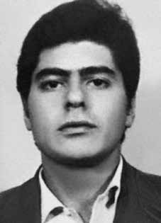

José
Wilson
Lessa
Sabbag
CIRCUNSTÂNCIAS DA MORTE
José Wilson Lessa Sabbag foi executado por agentes dos órgãos da repressão no dia 3 de setembro de 1969. José Wilson e Antenor Meyer, companheiros ligados à ALN, dirigiram-se à loja Lutz Ferrando, na Avenida Ipiranga, em São Paulo (SP), com o intuito de comprar um gravador para ser utilizado nas atividades da organização. Após uma aparente confusão envolvendo irregularidades no ato da compra, João teve um desentendimento com um guarda civil ali presente, sendo atingido no braço esquerdo. Na ocasião, também se feriram o guarda e o proprietário da loja. Logo em seguida, fugiram em um carro que os esperava à frente da loja. Durante a perseguição que se dera nas imediações, acabaram entrando a pé na rua Epitácio Pessoa, onde teriam acesso ao apartamento de um amigo. Segundo a versão oficial, ao dar voz de prisão, o soldado João Guilherme de Brito teria sido atingido e posteriormente morto ao tentar prender José Wilson que efetuou disparos em sua direção. Já no apartamento, José trancou-se no banheiro e Antenor, ao tentar fugir, caiu do 4o andar, sofrendo ferimentos e sendo preso em seguida. Com a recusa de José Wilson em deixar o local, foi então chamada a tropa de choque e o Departamento de Ordem Política e Social de São Paulo (DOPS/SP) para solucionar o incidente. Armado o cerco, atiraram bombas de gás lacrimogênio para forçar sua saída, travando-se ali um tiroteio que culminou em sua morte. Esta foi a versão oficial para o caso, confirmada pelos documentos e demais relatos colhidos. O relator do caso junto à CEMDP afirmou na ocasião da análise dos processos que tal versão já bastaria para deferir o pedido, considerando o caso como decorrente de morte em virtude de conflito armado com agentes do Estado. No entanto, uma apuração mais detalhada evidenciou inconsistências na versão oficial para a morte de José Wilson Lessa Sabbag. No boletim de ocorrência da rádio patrulha, anexo ao processo, consta que José Wilson foi “detido”, vindo a falecer apenas posteriormente, já no hospital. Além disso, o documento registra que quem o recebeu pessoalmente na ocasião foi o delegado de polícia Hélio Tavares, que trabalhou com o delegado Fleury e que ficou conhecido por ter presenciado várias cenas de tiroteio com membros da guerrilha armada. Há também no processo uma matéria jornalística publicada no dia seguinte ao episódio, que afirma que os fugitivos acabaram “rendendo-se à ação policial”. A matéria reproduz um comunicado assinado pelo capitão do 6o Distrito Naval, Ordival Ferreira Mendes Cardoso, que afirmou que foram presos naquele dia “2 assaltantes de banco […] até a chegada do DOPS, Força Pública e Polícia Civil.” Já o depoimento de Antenor Meyer, companheiro de Sabbag, traz a afirmação de que ambos foram levados ao DOPS/SP por viaturas da polícia, e lá foram interrogados e torturados. Antenor, que sobreviveu, foi conduzido ao Hospital das Clínicas e soube, na ocasião, que José Wilson havia morrido depois, e não no local do incidente. Outro aspecto controvertido, diz respeito ao desenho anexo ao laudo necroscópico de José Wilson. Ao analisar-se a trajetória dos projéteis que o atingiram, percebe-se que todas as perfurações têm um mesmo sentido – de cima para baixo –, exceto o disparo que entrou por seu lábio superior e teve saída – de baixo para cima – na região temporal esquerda. Segundo consta no laudo, o disparo deste projétil teria sido fundamental para a morte, causada por “lesão crânio encefálica traumática e hemorragia interna aguda”. A constatação é um forte elemento de convicção para a Comissão Nacional da Verdade, que indica que José Wilson Lessa Sabbag não morreu em decorrência de tiroteio, mas, sim, em decorrência de execução sumária, ocorrida após a sua prisão, em 3 de setembro de 1969.
José Wilson Lessa Sabbag was executed by agents of the repression bodies on September 3, 1969. José Wilson and Antenor Meyer, companions linked to the ALN, went to the Lutz Ferrando store, on Avenida Ipiranga, in São Paulo (SP), with the intention of buying a recorder to be used in the organization's activities. After an apparent confusion involving irregularities during the purchase, João had a disagreement with a civil guard there, being hit in the left arm. At the time, the guard and the store owner were also injured. Soon after, they fled in a car that was waiting for them in front of the store. During the chase that took place nearby, they ended up walking onto Epitácio Pessoa Street, where they would have access to a friend's apartment. According to the official version, when soldier João Guilherme de Brito was arrested, he was hit and later killed while trying to arrest José Wilson, who fired shots in his direction. Once in the apartment, José locked himself in the bathroom and Antenor, when trying to escape, fell from the 4th floor, suffering injuries and being subsequently arrested. With José Wilson's refusal to leave the scene, riot police and the São Paulo Department of Political and Social Order (DOPS/SP) were called in to resolve the incident. Once the siege was set up, tear gas bombs were thrown to force his exit, leading to a shootout that ended in his death. This was the official version of the case, confirmed by the documents and other reports collected. The case's rapporteur at CEMDP stated when analyzing the cases that this version would be enough to grant the request, considering the case as resulting from death due to armed conflict with State agents. However, a more detailed investigation revealed inconsistencies in the official version of José Wilson Lessa Sabbag's death. The radio patrol report, attached to the process, states that José Wilson was “arrested”, only to die later, already in the hospital. Furthermore, the document records that the person who received it personally at the time was police chief Hélio Tavares, who worked with police chief Fleury and was known for having witnessed several shooting scenes with members of the armed guerrilla. There is also a journalistic article published the day after the episode in the process, which states that the fugitives ended up “surrendering to police action”. The article reproduces a statement signed by the captain of the 6th Naval District, Ordival Ferreira Mendes Cardoso, who stated that “2 bank robbers were arrested that day […] until the arrival of the DOPS, Public Force and Civil Police.” The testimony of Antenor Meyer, Sabbag's companion, states that both were taken to DOPS/SP by police vehicles, and there they were interrogated and tortured. Antenor, who survived, was taken to Hospital das Clínicas and learned, at the time, that José Wilson had died later, and not at the scene of the incident. Another controversial aspect concerns the drawing attached to José Wilson's autopsy report. When analyzing the trajectory of the projectiles that hit him, it is clear that all the perforations have the same direction – from top to bottom –, except for the shot that entered through his upper lip and exited – from bottom to top – in the left temporal region. According to the report, the firing of this projectile would have been fundamental to the death, caused by “traumatic brain injury and acute internal bleeding”. The finding is a strong element of conviction for the National Truth Commission, which indicates that José Wilson Lessa Sabbag did not die as a result of a shooting, but rather as a result of a summary execution, which occurred after his arrest on September 3, 1969.
José Wilson Lessa Sabbag fue ejecutado por agentes de los órganos de represión el 3 de septiembre de 1969. José Wilson y Antenor Meyer, compañeros vinculados a la ALN, acudieron a la tienda Lutz Ferrando, en la Avenida Ipiranga, en São Paulo (SP), con la intención de comprar una grabadora para utilizarla en las actividades de la organización. Tras una aparente confusión por irregularidades durante la compra, João tuvo allí un desacuerdo con un guardia civil, resultando herido en el brazo izquierdo. En ese momento, el guardia y el dueño de la tienda también resultaron heridos. Poco después huyeron en un coche que los esperaba frente a la tienda. Durante la persecución que se desarrolló en las cercanías, terminaron caminando hacia la calle Epitácio Pessoa, donde tendrían acceso al departamento de un amigo. Según la versión oficial, cuando el soldado João Guilherme de Brito fue detenido, fue golpeado y posteriormente asesinado mientras intentaba detener a José Wilson, quien disparó en su dirección. Una vez en el apartamento, José se encerró en el baño y Antenor, al intentar escapar, cayó del 4º piso, sufriendo heridas y siendo posteriormente detenido. Ante la negativa de José Wilson de abandonar el lugar, la policía antidisturbios y el Departamento de Orden Político y Social de São Paulo (DOPS/SP) fueron llamados para resolver el incidente. Una vez establecido el asedio, se lanzaron bombas lacrimógenas para forzar su salida, lo que provocó un tiroteo que acabó con su muerte. Ésta fue la versión oficial del caso, confirmada por los documentos y otros informes recabados. El relator del caso en el CEMDP afirmó al analizar los casos que esta versión sería suficiente para acceder a la solicitud, considerando el caso como resultado de muerte por conflicto armado con agentes del Estado. Sin embargo, una investigación más detallada reveló inconsistencias en la versión oficial sobre la muerte de José Wilson Lessa Sabbag. El informe de radiopatrulla, adjunto al proceso, señala que José Wilson fue “detenido”, para fallecer posteriormente, ya en el hospital. Además, el documento registra que quien lo recibió personalmente en ese momento fue el jefe de policía Hélio Tavares, quien trabajaba con el jefe de policía Fleury y era conocido por haber presenciado varias escenas de tiroteos con miembros de la guerrilla armada. También hay un artículo periodístico publicado al día siguiente del episodio del proceso, que afirma que los prófugos terminaron “entregándose a la acción policial”. El artículo reproduce un comunicado firmado por el capitán del VI Distrito Naval, Ordival Ferreira Mendes Cardoso, quien afirmó que “ese día fueron detenidos 2 ladrones de bancos […] hasta la llegada del DOPS, Fuerza Pública y Policía Civil”. El testimonio de Antenor Meyer, compañero de Sabbag, afirma que ambos fueron trasladados en vehículos policiales al DOPS/SP, donde fueron interrogados y torturados. Antenor, que sobrevivió, fue trasladado al Hospital das Clínicas y supo, en ese momento, que José Wilson había muerto más tarde, y no en el lugar del incidente. Otro aspecto controvertido se refiere al dibujo adjunto al informe de la autopsia de José Wilson. Al analizar la trayectoria de los proyectiles que lo impactaron, se desprende que todas las perforaciones tienen la misma dirección -de arriba hacia abajo-, excepto el disparo que entró por su labio superior y salió -de abajo hacia arriba- por la región temporal izquierda. Según el informe, el disparo de este proyectil habría sido fundamental para la muerte, provocada por “lesión cerebral traumática y hemorragia interna aguda”. El hallazgo es un fuerte elemento de convicción para la Comisión Nacional de la Verdad, que indica que José Wilson Lessa Sabbag no murió producto de un tiroteo, sino de una ejecución sumaria, ocurrida luego de su arresto el 3 de septiembre de 1969.